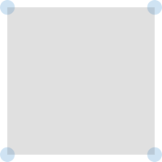
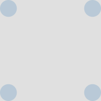
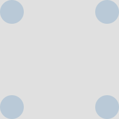
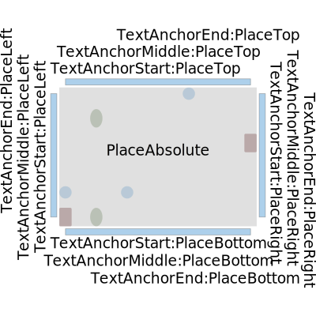
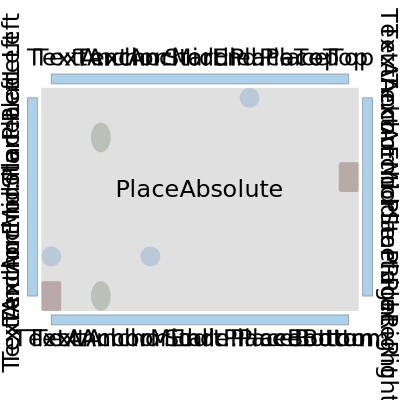
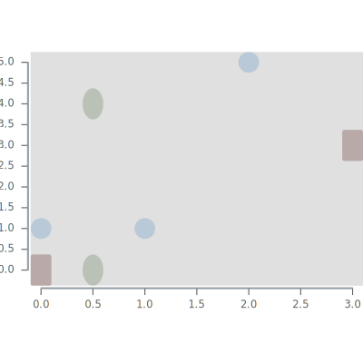
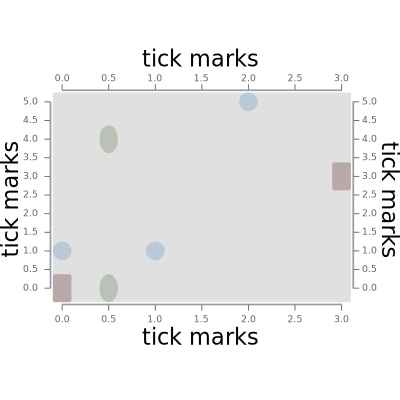
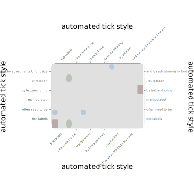

Notes, testing and code for chart-svg develoment.
{-# LANGUAGE DataKinds #-}
{-# LANGUAGE FlexibleContexts #-}
{-# LANGUAGE FlexibleInstances #-}
{-# LANGUAGE MonoLocalBinds #-}
{-# LANGUAGE NoImplicitPrelude #-}
{-# LANGUAGE OverloadedLabels #-}
{-# LANGUAGE OverloadedLists #-}
{-# LANGUAGE OverloadedStrings #-}
{-# LANGUAGE RankNTypes #-}
{-# LANGUAGE RebindableSyntax #-}
{-# LANGUAGE ScopedTypeVariables #-}
{-# LANGUAGE TypeApplications #-}
{-# LANGUAGE TypeFamilies #-}
{-# LANGUAGE TypeOperators #-}
{-# OPTIONS_GHC -Wall #-}
import Chart.Svg
import NumHask.Prelude
import Lens.Micro
import Codec.Picture.Types
import Data.Generics.Product (field)
import Chart.Hud
import Chart.Core
import Chart.Spot
import Graphics.Svg.Types as Svg hiding (Point, Text)A Chart consists of a few conceptual layers:
Data for chart-svg charts is typically a double-list of either points or rectangles. The data below are three simple lines.
ls :: [[Point Double]]
ls =
map (uncurry Point) <$>
[ [(0.0, 1.0), (1.0, 1.0), (2.0, 5.0)]
, [(0.0, 0.0), (3.0, 3.0)]
, [(0.5, 4.0), (0.5, 0)]
]Physical, on-the-page representations of data are separate to the data itself.
chart-svg categorises representations into different style categories. The code below specifies a line style for representing chart data, with differing colors and line widths.
gopts :: [GlyphStyle]
gopts =
[ field @"borderSize" .~ 0 $
field @"size" .~ 0.1 $
defaultGlyphStyle
, field @"borderSize" .~ 0 $
field @"size" .~ 0.1 $
field @"color" .~ PixelRGBA8 100 30 30 100 $
field @"shape" .~ RectRoundedGlyph 1.5 0.01 (0.01 :: Double) $
defaultGlyphStyle
, field @"borderSize" .~ 0 $
field @"size" .~ 0.1 $
field @"color" .~ PixelRGBA8 100 130 80 100 $
field @"shape" .~ EllipseGlyph 1.5 $
defaultGlyphStyle
]and this is enough to create a chart:
glyphs :: [Chart Double]
glyphs = zipWith (\d s -> Chart (GlyphA s) mempty (SpotPoint <$> d)) ls gopts
This layering is not exactly canonical. ggplot2 uses the term aesthetics for the process of deciding which features of the data will be brought out in the visualisation, so that style is seen as a function of the data.
By clearly specifying what is a position on the page (the Spot) from what may be some other style decision (the color or shape of a geometric object), however, other chart features, such as grid-lines and axes, can reuse the same functionality used to build the data representation.
In addition to raw data, and to the manifestation of that data on a physical plane, a chart usually includes decoration that assists in interpreting the chart data - axes, grid lines, titles, legends and friends that visual explain what is being seen in the chart.
chart-svg calls this decoration the heads-up-display - the hud.
The remainder of this *.lhs records hud development.
huds are different to pure chart data only in the sense that they require both information on the raw data (eg data ranges to calculate tick values) and information on the representation (eg how wide the chart is to properly locate the tick text on the page)
The xy-plane on which the data is represented - the canvas - is a good place to tease this out.
chart-svg and, specifically, chartSvg recognises that the physical representation of a data point may fall outside the data range, so that the viewbox becomes wider than the raw data suggests.
Here’s an attempt to create a background canvas for our example chart corners:
corners :: Double -> [Chart Double]
corners s =
[Chart
(GlyphA $
field @"borderSize" .~ 0 $
field @"size" .~ s $
defaultGlyphStyle)
mempty
[SP (-0.5) (-0.5), SP (-0.5) 0.5, SP 0.5 (-0.5), SP 0.5 0.5]]
canvas1 :: ChartSvg Double
canvas1 = chartSvg one (corners 0.1 <> [Chart (RectA (blob grey 0.2)) mempty [one]])

The canvas has to take into account the data area and the physical representation of the data; in this case the circle size of the data points.
canvas2 :: (ToRatio a, FromRatio a, Subtractive a, Field a, BoundedLattice a) => ViewBox a -> [Chart a] -> ChartSvg a
canvas2 (ViewBox asp) cs =
chartSvg_ (ViewBox asp') (cs' <> [canvas'])
where
cs' = projectSpots asp cs
asp' = styleBoxes cs'
canvas' = Chart (RectA (blob grey 0.2)) mempty
[SpotArea asp']

So the introduction of a hud to a chart requires a different api to chartSvg. Together with a list of Charts and a ViewBox, we require a function that takes in a ViewBox - the viewbox of the main chart list - and gives back a list of Charts which is the pre-rendered hud.
hudSvg one canvas3 (corners 0.25)

Building the Hud includes a layering process: the next Hud element being added (which is a [Chart a]) takes into account the ViewBox of the chart and all the previous hud elements.
The foldl layer mempty fold of the Huds effectively forgets what is the chart and what are the hud elements, and text anchoring cannot reference the original chart rep.
b1 :: [Bar Double]
b1 =
[ Bar PlaceTop defaultRectStyle 0.05 0.02
, Bar PlaceRight defaultRectStyle 0.05 0.02
, Bar PlaceBottom defaultRectStyle 0.05 0.02
, Bar PlaceLeft defaultRectStyle 0.05 0.02
]
t1 :: [Title Double]
t1 = (\a p -> (field @"place" .~ p :: Title Double -> Title Double) $
field @"align" .~ a $
defaultTitle (show a <> ":" <> show p)) <$>
[TextAnchorStart, TextAnchorMiddle, TextAnchorEnd] <*>
[PlaceBottom, PlaceTop, PlaceLeft, PlaceRight]
hud1 :: ViewBox Double -> [Chart Double] -> ChartSvg Double
hud1 vb cs =
hudSvg vb [c, b, t] cs
where
c = canvas (blob grey 0.2) mempty
b = mconcat $ (\x -> bar x mempty) <$> b1
t = foldl layer mempty $ (\x -> title x mempty) <$>
(((field @"place" .~ PlaceAbsolute (Point 0 0) :: Title Double -> Title Double) $
defaultTitle "PlaceAbsolute") : t1)hud1 (aspect 1.5) glyphs

fold ignores the other Hud elements
hud2 :: ViewBox Double -> [Chart Double] -> ChartSvg Double
hud2 vb cs =
hudSvg vb [c, b, t] cs
where
c = canvas (blob grey 0.2) mempty
b = mconcat $ (\x -> bar x mempty) <$> b1
t = fold $ (\x -> title x mempty) <$>
(((field @"place" .~ PlaceAbsolute (Point 0 0) :: Title Double -> Title Double) $
defaultTitle "PlaceAbsolute") : t1)
Tick marks is an example of computing and placing Hud elements according to the original range of the data.
hud3a :: ViewBox Double -> [Chart Double] -> ChartSvg Double
hud3a vb cs =
hudSvg vb ([c, (bBot <> tBot <> bLeft <> tLeft)]) cs
where
c = canvas (blob grey 0.2) mempty
bBot = bar (Bar PlaceBottom defaultRectStyle 0.005 0.01) mempty
bLeft = bar (Bar PlaceLeft defaultRectStyle 0.005 0.01) mempty
tBot = tick defaultTick mempty
tLeft = tick ((field @"place" .~ PlaceLeft :: Tick Double -> Tick Double) $ defaultTick) mempty
hud3 :: ViewBox Double -> [Chart Double] -> ChartSvg Double
hud3 vb cs =
hudSvg vb ([c, (bBot <> tBot <> bLeft <> tLeft <> bTop <> tTop <> bRight <> tRight)] <> t') cs
where
c = canvas (blob grey 0.2) mempty
bBot = bar (Bar PlaceBottom defaultRectStyle 0.005 0.01) mempty
bLeft = bar (Bar PlaceLeft defaultRectStyle 0.005 0.01) mempty
bTop = bar (Bar PlaceTop defaultRectStyle 0.005 0.01) mempty
bRight = bar (Bar PlaceRight defaultRectStyle 0.005 0.01) mempty
tBot = tick defaultTick mempty
tLeft = tick ((field @"place" .~ PlaceLeft :: Tick Double -> Tick Double) $ defaultTick) mempty
tTop = tick ((field @"place" .~ PlaceTop :: Tick Double -> Tick Double) $ defaultTick) mempty
tRight = tick ((field @"place" .~ PlaceRight :: Tick Double -> Tick Double) $ defaultTick) mempty
t' = (\x -> title ((field @"place" .~ x :: Title Double -> Title Double) $ defaultTitle "tick marks") mempty) <$>
([PlaceRight, PlaceLeft, PlaceTop, PlaceBottom] :: [Place Double])
Getting ticks to display sensibly can be labor intensive. Starting with some longer labels to illustrate the process:
hud4 :: ViewBox Double -> [Chart Double] -> ChartSvg Double
hud4 vb cs =
hudSvg vb ([c, (bBot <> tBot <> bLeft <> tLeft <> bTop <> tTop <> bRight <> tRight)] <> t') cs
where
labels = ["tick labels", "often need to be", "manipulated", "by text anchoring", ", by rotation", "and by adjustments to font size"] :: [Text]
ts = (field @"tstyle" .~ TickLabels labels :: Tick Double -> Tick Double) $ defaultTick
c = canvas (blob grey 0.2) mempty
bBot = bar (Bar PlaceBottom defaultRectStyle 0.005 0.01) mempty
bLeft = bar (Bar PlaceLeft defaultRectStyle 0.005 0.01) mempty
bTop = bar (Bar PlaceTop defaultRectStyle 0.005 0.01) mempty
bRight = bar (Bar PlaceRight defaultRectStyle 0.005 0.01) mempty
tBot :: Hud Double
tBot = Hud $ \vb' d a -> let (ts',das') = adjustTick defaultAutoOptions vb' a (ts, mempty) in let (Hud hud) = tick ts' das' in hud vb' d a
tLeft = tick ((field @"place" .~ PlaceLeft :: Tick Double -> Tick Double) $ ts) mempty
tTop :: Hud Double
tTop = Hud $ \vb' d a -> let (ts',das') = adjustTick defaultAutoOptions vb' a ((field @"place" .~ PlaceTop :: Tick Double -> Tick Double) $ ts, mempty) in let (Hud hud) = tick ts' das' in hud vb' d a
tRight = tick ((field @"place" .~ PlaceRight :: Tick Double -> Tick Double) $ ts) mempty
t' = (\x -> title ((field @"place" .~ x :: Title Double -> Title Double) $ defaultTitle "automated tick style") mempty) <$>
([PlaceRight, PlaceLeft, PlaceTop, PlaceBottom] :: [Place Double])
main :: IO ()
main = do
scratchWith
( clearScratchStyle &
field @"fileName" .~ "other/glyphs.svg" &
field @"ratioAspect" .~ 1.5) glyphs
write "other/canvas1.svg" (Point 200 200) canvas1
write "other/canvas2.svg" (Point 200 200) (canvas2 one (corners 0.2))
write "other/canvas3.svg" (Point 200 200) (hudSvg one [canvas3] (corners 0.25))
write "other/hud1.svg" (Point 400 400) $ hud1 (aspect 1.5) glyphs
write "other/hud2.svg" (Point 400 400) $ hud2 (aspect 1.5) glyphs
write "other/hud3.svg" (Point 400 400) $ hud3 (aspect 1.5) glyphs
write "other/hud3a.svg" (Point 400 400) $ hud3a (aspect 1.5) glyphs
write "other/hud4.svg" (Point 400 400) $ hud4 (aspect 1.5) glyphsλ> workflow
stack build --test --exec "$(stack path --local-install-root)/bin/chart-hud" --exec "$(stack path --local-bin)/pandoc -f markdown+lhs -i other/header.md -i app/hud.lhs -i other/footer.md -t html -o hud.html --filter pandoc-include --mathjax" --file-watch --ghc-options -freverse-errors